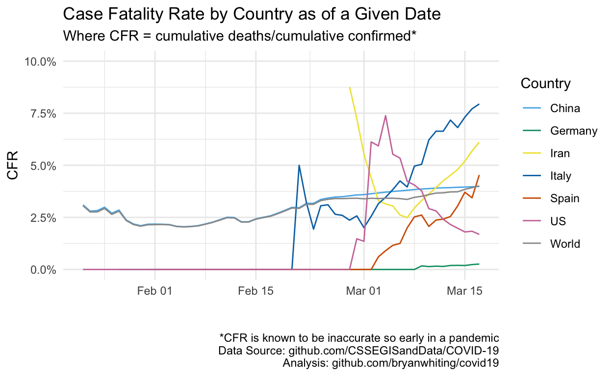

Case Fataility Rate by Country Over Time. Written 3/18, 4:20pm.
Tracking case fatatility rate (CFR) can be tricky so early in a pandemic. With data obtained from Johns Hopkins, we can at least get a sense for how the CFR has changed daily. Germany has a surprisingly low CFR despite having over 9,200 cases as of this writing.

As of end of 3/17/2020, here are the case fatatlity rates by country.
Measuring the Case Fatatility Rate is tricky. And you can easily lie when 1) you don’t have accurate data and 2) you don’t understand how to model epidimiological phenomena. I fall into both of those categories.
The case fatality rate (CFR) represents the proportion of cases who eventually die from a disease.
Once an epidemic has ended, it is calculated with the formula: deaths / cases.
But while an epidemic is still ongoing, as it is the case with the current novel coronavirus outbreak, this formula is, at the very least, “naïve” and can be “misleading if, at the time of analysis, the outcome is unknown for a non negligible proportion of patients.”8 Worldometers.info
The CFR will likely decrease as 1) more people are tested, 2) people are treated better, and 3) testing becomes more reliable.